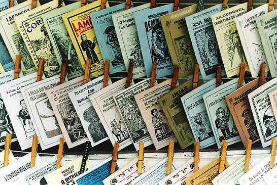

Cordéis:
Cordeís que abordam os direitos humanos, da Declaração Universal dos Direitos Humanos lido em sala, é um marco histórico adotado pela Assembleia Geral da ONU em 10 de dezembro de 1948, no pós-Segunda Guerra Mundial, para estabelecer direitos e liberdades básicas de todas as pessoas.
Cordel (ou literatura de cordel) é um gênero literário popular em verso, tradicionalmente impresso em folhetos e muito presente na cultura brasileira, sobretudo no Nordeste.
